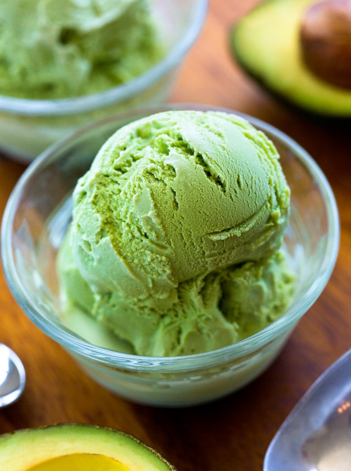

Avocado Ice Cream

Description
Avocado ice cream is a chilled dessert that uses any ice cream base flavored with avocadoes. Our avocado ice cream recipe is made with heavy cream, condensed milk, milk, sliced avocadoes, and it also has crushed almonds for that extra crunchy bite.
- 2 pc Avocados
- 1 cup coconut milk or heavy cream
- 1/4 cup sweetener of choice
- 1/2 tsp pure vanilla extract
- optional: Chocolate Truffles
- optional: 1/4 tsp pure peppermint extract (more flavor ideas are listed above)
Steps:
- Be sure to start with ripe avocados. Scoop out avocado flesh. Blend with the cream or coconut milk (canned full-fat coconut milk), sweetener, vanilla, and optional ingredients.
- Transfer to an ice cream maker and churn according to manufacturer's directions or transfer to a bowl, cover, and freeze for an hour or two until firm enough to scoop out.
- If desired, portion into avocado shells and place a chocolate truffle in the middle.